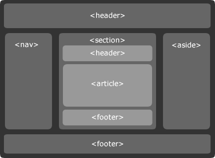
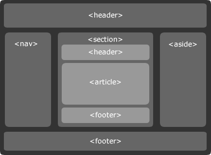

Обзор, цель и назначение урока
Рассмотреть основные тиги HTML5
Сравнение HTML4.1 и HTML5
Научиться пользоваться новыми тегами HTML5
Научиться временно скрывать содержимое
Научиться создавать редактируемые части страницы
Рассмотреть микроформаты как расширение HTML5
Рассмотреть структуру страницы HTML5
Поддержка HTML5 современными браузерами
 
